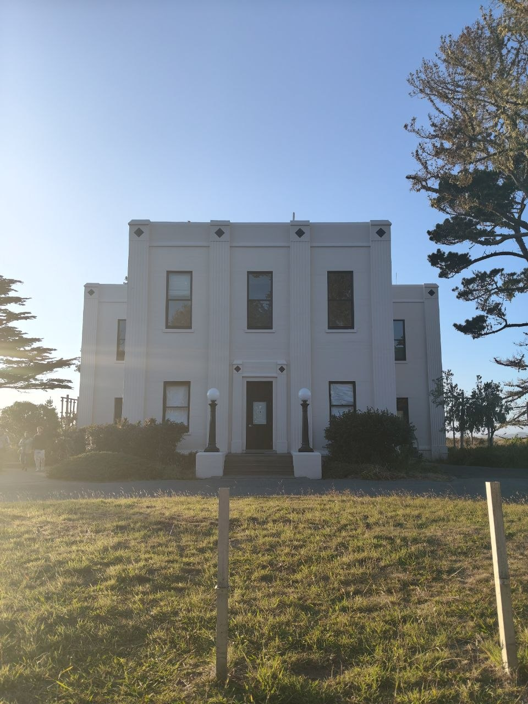
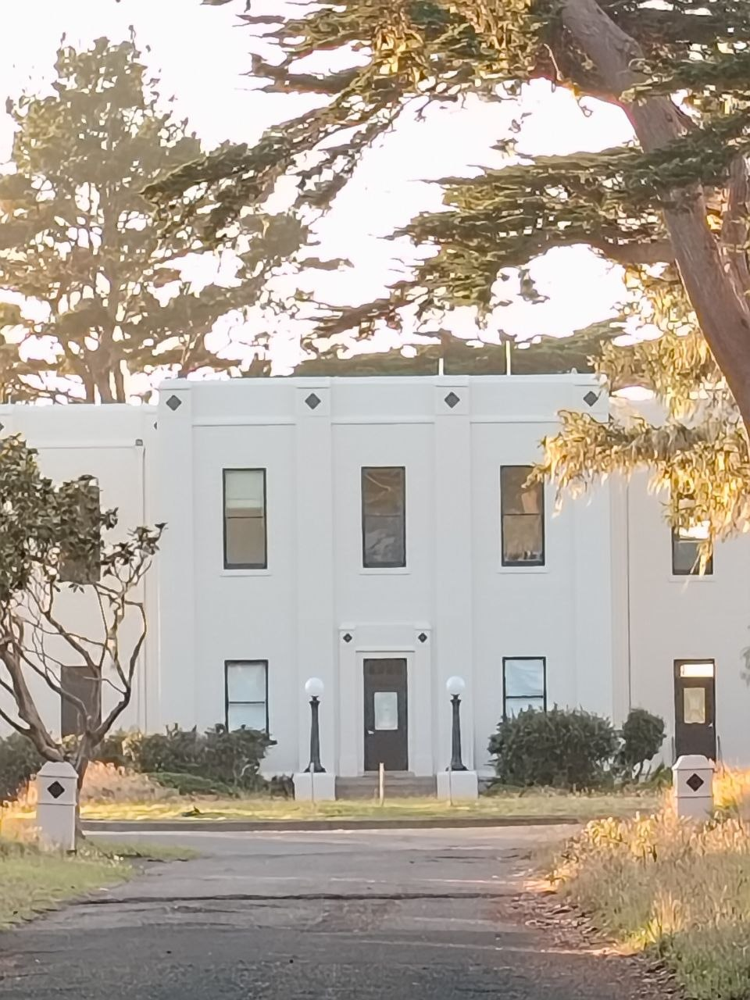
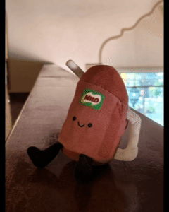
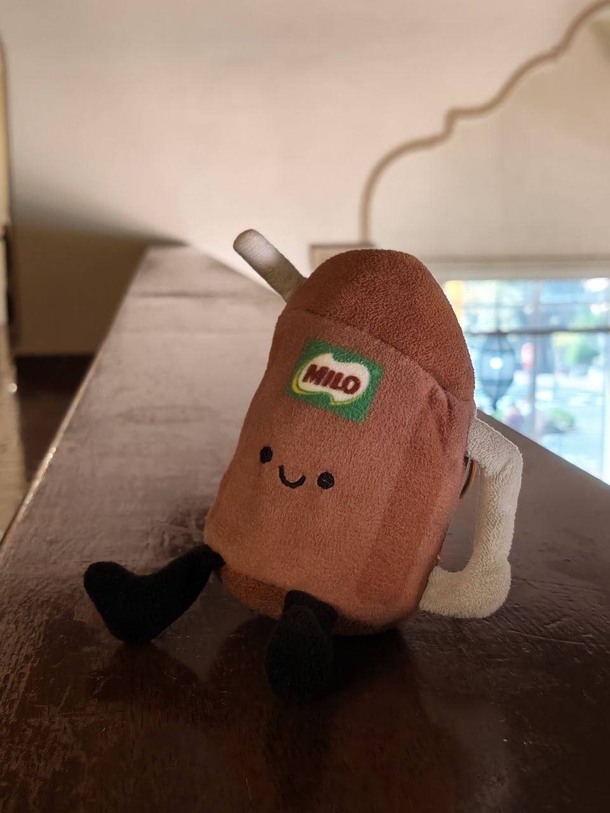
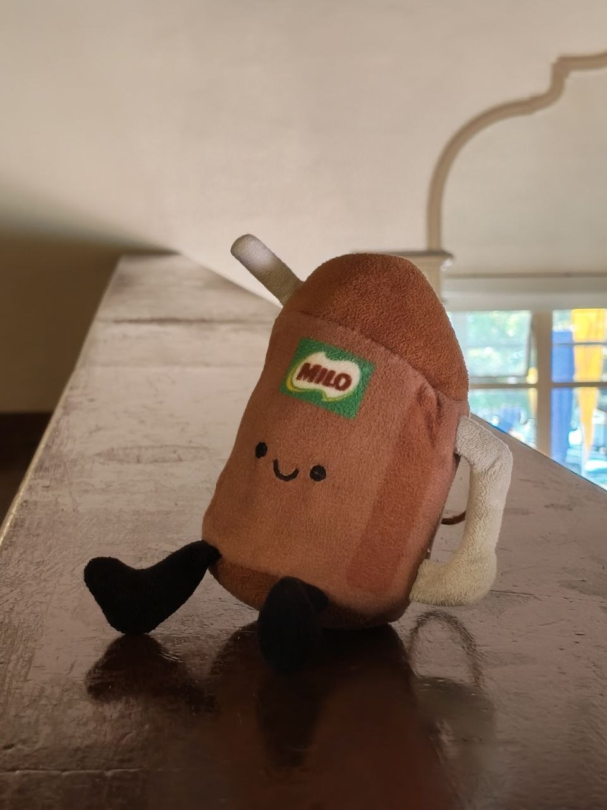
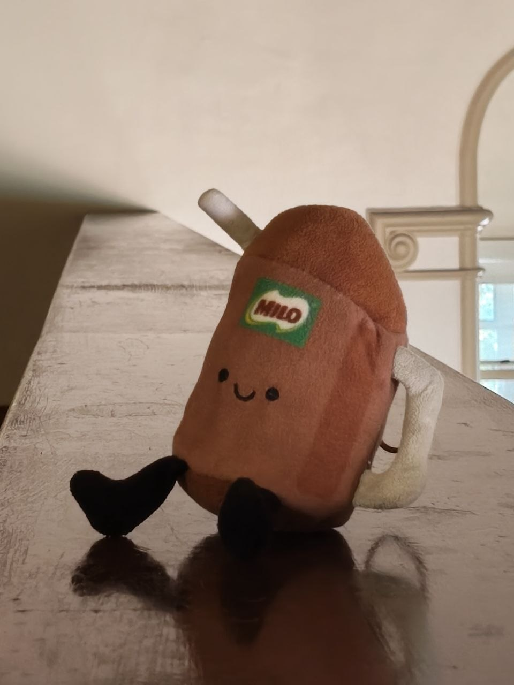
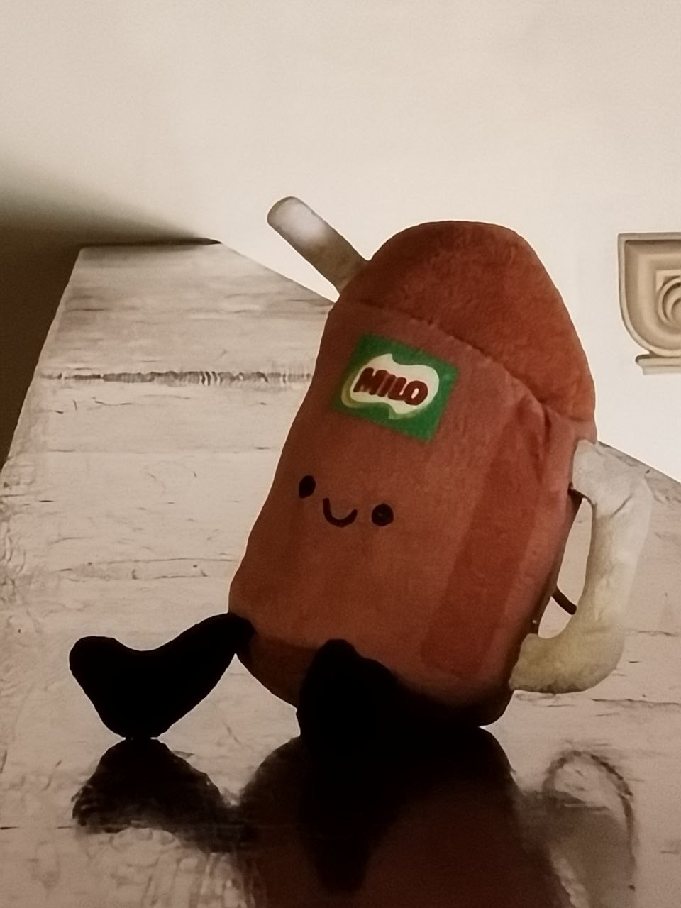
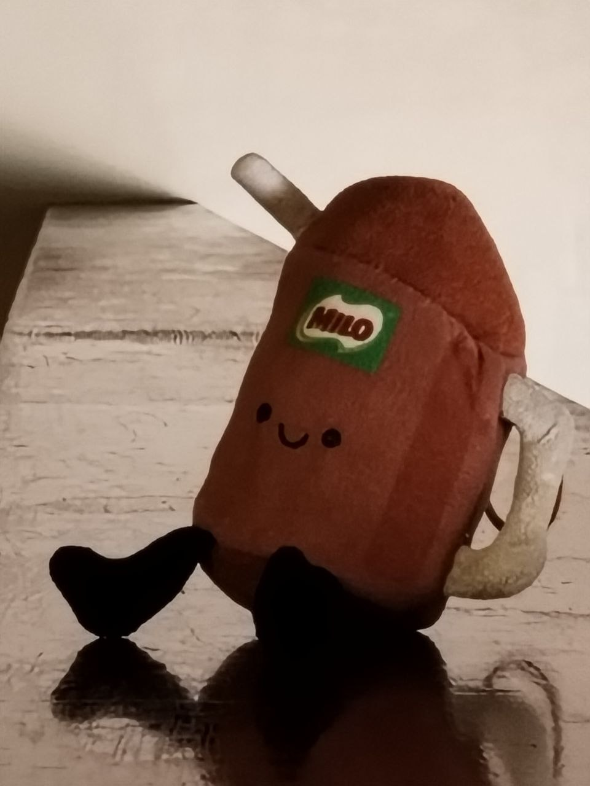

Up close, small differences in distance across the face are a big relative difference, so features closest to the lens look larger. Stepped back and zoomed in, that same small difference becomes tiny compared to the total distance, so the face looks more natural and proportional.


Up close without zoom (left), the foreground and background stay clearly separated, giving real depth. Zoomed in from far away (right), near and far objects end up almost the same distance from the camera in relative terms, so everything flattens into one squeezed-together plane.





